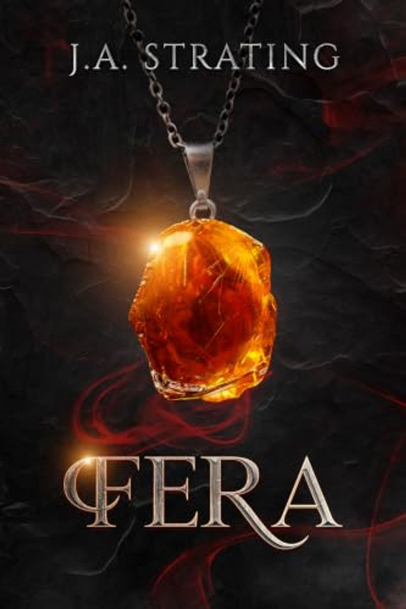

Brum · The cast-out
Nothing left to lose.
Limited Control cost Brum his place in the guild. A dangerous expedition offers a way back, until an unknown Fera makes a choice he never thought possible.
Introducing the Fera series · Book one
In the kingdom of Orgwell, creatures called Fera are enslaved through Control. For those who hold power, they are a privilege. For everyone else, they are another way to survive—or fall.

A story of creatures and Control, but also of what a society allows its most powerful people to do.
Brum · The cast-out
Limited Control cost Brum his place in the guild. A dangerous expedition offers a way back, until an unknown Fera makes a choice he never thought possible.
Isabella · The guild mistress
She holds rank, influence and a guild of her own. None of it has helped her uncover who murdered her parents. A trail of illegal Amberium might.
The conspiracy
As their paths converge, buried research and a relentless hunt threaten the system on which Orgwell's hierarchy depends.
Fera: The Amberium Conspiracy is an adult dark epic fantasy with multiple viewpoints, morally complicated choices, political intrigue and dangerous creatures. It is not romantasy.
The novel is the opening chapter in a larger story, but the conflict at its centre reaches a conclusion of its own.
The first reviews are in. Readers have been drawn to Orgwell, its creatures and the characters caught in its politics.
“I genuinely couldn't put it down.”Beth Rosser · GoodreadsRead reader reviews
“I cannot wait to return to the world of Orgwell!”Shannon Cleijne · GoodreadsRead reader reviews
“This novel is worth the read.”Steven Chisholm · Chiz ChatRead the full review
Beyond the last page
Follow the Fera series and receive news about future releases, including the forthcoming short story The Massacre of Flowing Hill.